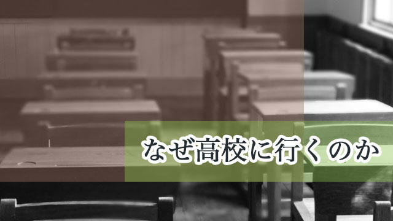

先日某塾から、塾生（中学生）に「何のために高校へ行くのか」というテーマで話をして欲しいと頼まれ行ってきました。
「何のために高校へ行くのか？」
これは改めて考えてみると案外難しいテーマです。多くの人は「大学受験のために」「より高度な勉強をするために」高校へ行くのが当たり前と考えるでしょう。
小学校→中学校→高校→大学→社会人というレールを歩むのが常識である時代に、今さら「高校へ行く意義」など語って何になるのか。
まずそういう疑問が頭をかすめます。
ただ、塾の意図も分かります。高校全入が当たり前の時代だからこそ、無自覚に「皆が行くから自分も行く」という主体性のないことではいけない。やはり自分なりに高校へ行く目的、意義というものを明確にして前向きな姿勢で高校進学というものをとらえて欲しい。
そうして初めて行くべき高校も決まり進むべき目標が明確になれば自ずと受験勉強にも力が入り良い結果につながる。
恐らくそのような思惑のもと私に「講演」を依頼したのでしょう。
しかし私は結果的に塾の期待を裏切ったのです。
少なくとも私の話は塾の意図に沿わない内容だった、その日集った生徒や親の皆さんにも戸惑いや混乱を与えるものだったと思います。
私の話は思い切って単純化すれば概ね次のようなものでした。
まず高校は、勉強する場というより「自分が何者であるか」を知るために行くところであり、その為には勉強そのものよりも友人や先生たちとの交流の体験のほうが重要であること。
もう一つは“学校秀才”になってはいけない。なぜなら学校秀才はつまらない人間だからということでした。
まぁ、これだけならそれほど変な内容ではないと感じるかもしれませんが、私の話した「自分の高校時代の体験」の具体例が、真面目な中学生や親にとっていささか毒気を含むものだったと反省する次第です。
私のおバカな高校時代
ところで改めて高校や高校生について考えてみると、やはりこの16歳から18歳という期間はその人の人生にとって後々まで大きな影響を与えるものだと感じます。
自分とは何者かを知るためには、他者との関係が大事です。自己とは他との関係性において浮かび上がってくるそのものだからです。
高校生にもなれば知力体力も大人並に発達し、個性もそれまで以上に鮮明になります。
当然行動範囲も広がる（広げたい）わけで多くの交友関係の中で、自らの能力や限界を極めたくなるのは自然な欲求です。
もちろんその対象は交友関係だけでなく、知的欲求に向かう場合もあるわけで、この時期にやたらと難解な哲学書や文学談義に走る者が出てきます。
個人的な話になってしまいますが、私は通った高校が自由な校風であったせいもあり、実に多様な友人関係に恵まれた思いがあります。
勉強に真面目に打ち込む者もいる一方、授業をサボって映画を観に行ったり、異性ばかり追い回すナンパ系やら、他校の不良学生と決闘のマネごとをする硬派系、スポーツに熱中する部活人間と、まぁ多士済々な面々が揃っていました。
私はこれら全てのタイプと交友関係を結び、彼らと勉強そっちのけ（!?）で付き合い、また生徒会の新聞局にも属していたので寝る間もないほど忙しかったのを覚えています。
この新聞づくりは楽しいものでした。当時は60年代後半で大学だけでなく高校でも政治活動（学生運動）が激しく、「政治」を皆で分析し取材し議論することに、時間を忘れさせるくらい熱中したものです。
特に、先輩たちが「実存主義」とか「マルクス主義」などと口にするのを聞き、私もマネをして意味もわからずサルトルやカミュの難解な本を読んだりしたこと。
そしてよせばよいのに、顧問の先生や知り合いの教師に議論をふっかけるナマイキな生徒でもあったこと。
これらは今振り返ると良い思い出です。
当時は先生の間にもそんな我々のふるまいを笑って許してくれる雰囲気がありました。ナマイキ盛りの生徒の「逸脱行為」を大目に見てくれる大人の包容力とでもいうのでしょうか。
とりわけ顧問の教師は独身だったせいか、下校後よく連れ立って喫茶店に入り夜遅くまで我々の議論に付き合ってくれました。
高校での体験は貴重な学び
私はここで古き良き時代の思い出を語っているだけではありません。
あらゆる種類の友人たちと交流していたこと。それは楽しいことばかりではなく、ケンカや揉め事の仲裁であったり、一緒に授業をサボって叱られたり、街の不良にからまれて全員で交番に連行されたりしたことも含め、危険もありまた難解な書物を読むが勉強はしないため成績がガタ落ちというマイナス（代償）も払いながら、それらの体験はことごとくその後の人生を決定づけたということです。
逆に言えば、私の人生の縮図が高校時代に既にあるということ。全てに意味があった。全てが役に立ったのです。
つまり高校時代の体験は全てが「自分は何者であるか」「自分の特性は何であるか」を浮き彫りにするものであり、その特性や資質の命じるまま自由に（アチコチ）頭をぶつけながらも動き回ることでそれらは磨かれ伸びていくということです。
しかし、それは後で振り返ってみて「そうだ」と分かるものであって、当時はそんなことは意識していません。
人生を大きく俯瞰したときパズルのピースのように「全ては必要な事だった」と分かるのです。結果として高校時代の重要性が認識できるのです。
だから中学生段階では、自分がどんな高校生活を送るのかは分からないし、目的とか意義とか言われてもイメージできなくて良いのです。
高校では思い切り自由奔放に、伸び伸びと自己を全力で発揮して欲しい。
失敗してもよい。
それどころか、様々な試みの中で挫折し自分の弱さ強さを経験して欲しい。
「失敗の中にこそ貴重な学びがある」
それくらいの気持ちで多種多様なことにチャレンジして欲しいのです。
それらの体験はことごとく財産となるでしょう。
私が中学生たちに伝えたかったことはこういうことだったのです。
最後に
勉強についてあえて強調しなかったのも、今の高校は大学の予備校化し、子どもたちに自由と冒険を与える場ではなくなりつつあることに懸念を持つからでもありました。
その勉強も大学に入るためにだけの上辺の勉強に偏りがちで、果たして肝心の大学での学問探求につながっているのでしょうか。
先に私が高校時代、難解な哲学書や文学書、政治関係の本を背伸びしながら読んだことに触れましたが─それらは学校の勉強とは直接関わっていないため成績は散々でしたが─大学では大いに役立ちました。
高校で「勉強するな」と言っているわけではありません。するなら興味関心のおもむくままトコトン追究して欲しいと思います。
入試のための表面的学習ではあまりにも淋しいと言いたいのです。
これが「学校秀才になるな」の意味です。
受験レベルの勉強では後々役に立たず、ここにばかりエネルギーを使うことは「もったいない」と思うのです。
しかし私のこの話は「現実味のない」古くさい話に聞こえるかもしれません。
今どきの中学生や親にはイマイチ響かないのでしょう。
私にとってはこの方が少し淋しいかなという気がします。